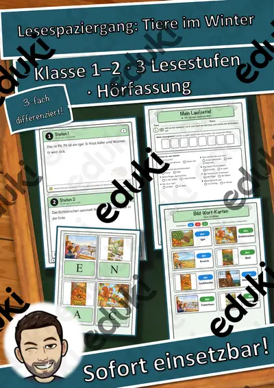
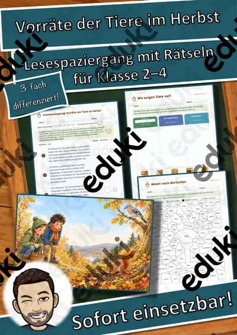

Lesespaziergang Materialpaket: 3 Geschichten, 6-fach differenziert – Herbst, Advent, Winter (Klasse 1–4, DaZ)
Lesen, laufen, Lösungswort – drei Lesespaziergänge durch Herbst, Advent und Winter
Beim Lesespaziergang hängen 10 Bildkarten im Klassenzimmer, im Flur oder auf dem Schulhof. Jedes Kind bekommt das Blatt seiner Lesestufe, liest Station für Station, sucht das passende Bild und notiert den Buchstaben von der Karte. Nach den kleinen Ziffern sortiert ergeben die Buchstaben das Lösungswort – die Selbstkontrolle ist eingebaut. Alle Kinder lesen dieselbe Geschichte um die Geschwister Mila und Jonas – jedes auf seinem Niveau.
Preisvorteil: Einzeln kosten die 3 Lesespaziergänge zusammen 8,97 €. Im Paket zahlst du nur 5,99 € (rund 33 % gespart).
Die 3 Geschichten
Ein Nebeltag im November (Herbst): Mila (8) und Jonas (6) gehen an einem Novembermorgen zu Fuß zur Schule. Alles liegt im Nebel – und auf dem Weg gibt es zehn Dinge zu entdecken. Lösungswort TAUTROPFEN.Auf dem Weihnachtsmarkt (Advent): Mila und Jonas besuchen mit Oma am Abend den Weihnachtsmarkt. Zehn Stationen voller Lichter, Düfte und Überraschungen warten auf sie. Lösungswort ZIMTSTERNE.Vögel am Futterhaus (Winter): Es hat geschneit. Mila und Jonas füllen das Futterhaus im Garten und beobachten mit dem Fernglas, wer zu Besuch kommt – zehn Entdeckungen im Winter. Lösungswort FUTTERHAUS.Sechsfach differenziert – mit denselben Karten und demselben Lösungswort
Stufe 1 – Wörter: Ein Wort je Station (Nomen mit Artikel) (Leseanfänger, DaZ-Einsteiger)Stufe 2 – Wortgruppen: Adjektiv + Nomen (Klasse 1/2, DaZ)Stufe 3 – Kurze Sätze: Ein einfacher Satz je Station (Klasse 1/2)Stufe 4 – Zwei Sätze: Zwei Sätze mit mehr Einzelheiten (Klasse 2)Stufe 5 – Kurzer Text: Zusammenhängende Geschichte in 10 Abschnitten (Klasse 2/3)Stufe 6 – Langer Text: Das Bild wird nur umschrieben – Lesen zwischen den Zeilen, mit Sachwissen (Klasse 3/4, starke Leser)In jedem Lesespaziergang (19 Seiten + Deckblatt)Hinweise für die Lehrkraft: Ablauf, Stufenwahl, Differenzierungs- und Bewegungsvarianten, Sachwissen, Lehrplanbezug20 Bildkarten in zwei Sätzen: A = Bild + Buchstabe, B = Bild + Wort mit Artikel-Farbe (Lesestufe 1–2, DaZ), dazu Start- und Kontrollkarte8 Leseblätter: Lesestufe 1–4 je eine Seite, Lesestufe 5 und 6 je zwei Seiten3 Sternchenaufgaben: ★ Wörter und Artikel · ★★ Richtig/Falsch und Satz schreiben · ★★★ Fragen mit Begründung und Schreibwerkstatt
Laufzettel mit Ich-kann-Check und Hör-Spaziergang per QR-Code (alle Wörter und kurzen Sätze vorgelesen)Lösungen zu allen Blättern
Insgesamt 30 Stationen, 60 Bildkarten, 18 Lesestufen-Blätter, 9 Sternchenaufgaben und 3 Audios. Einsatz: Deutsch (Leseflüssigkeit, Textverständnis), Sachunterricht (Wetter, Feste und Bräuche, Tiere im Winter), Freiarbeit, Wochenplan, Vertretungsstunde, jahrgangsgemischtes Lernen, Förderschule, DaZ. Dauer je 20–45 Minuten.
Illustrationen KI-erzeugt und bearbeitet, keine Fotos, keine realen Personen. Audio per Sprachsynthese. Texte mit KI-Unterstützung erstellt und geprüft.
Viel Freude beim Lesen und Laufen wünscht dir Snice!
Ähnliche Materialien

Materialpaket Winter-Lesespaziergänge für Klasse 2–4: 5 Lesespaziergänge mit Rätseln, 3-fach differenziert (Winterwald, Spuren im Schnee, Plätzchen & mehr)

Lesespaziergang Tiere im Winter: Pit, der Igel, sucht ein Bett – 8 Stationen in 3 Lesestufen mit Hörfassung (Klasse 1–2, DaZ)

Lesespaziergang: Vorräte der Tiere im Herbst – 3-fach differenziert (★/★★/★★★), Klasse 2–4

Materialpaket Winter und Advent für die 4. Klasse: 5 Lesespurgeschichten mit Rätselaufgaben (Weihnachtsmarkt, Fröbelsterne, Sternbilder & mehr)

Materialpaket Advent und Winter für die 6. Klasse: 7 Lesespurgeschichten mit Rätselaufgaben (Weihnachtsbasar, Saturnalien, Lichterfeste & mehr)

Materialpaket Winter und Advent für die 8. Klasse: 10 Lesespurgeschichten mit Rätselaufgaben fächerübergreifend (Polarlichter, Streusalz, Krippenbau & mehr)

Materialpaket Winter und Advent für die 7. Klasse: 10 Lesespurgeschichten mit Rätselaufgaben fächerübergreifend (Weihnachtsoratorium, Südpol, Eishockey & mehr)